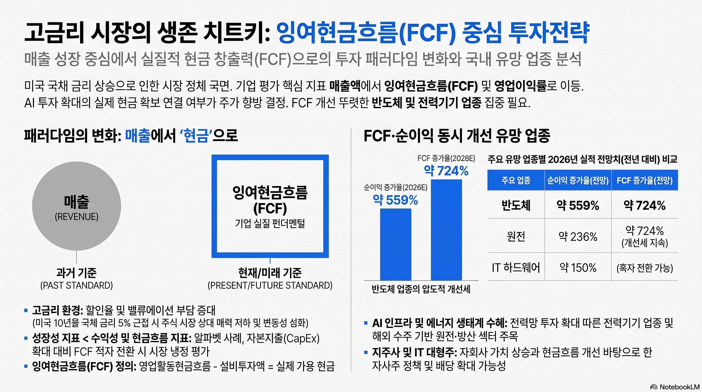

슈퍼개미 이세무사TVMORNING DIGEST · 2026-07-27 · 슈퍼개미 이세무사TV🎬 영상
고금리 시장에서 살아남는 투자전략 — 잉여현금흐름 중심 업종

01핵심 개요
항목
내용
채널
슈퍼개미 이세무사TV
제목
고금리 시장에서 살아남는 투자전략 (삼성전자·SK하이닉스·현대차)
길이
약 11분
핵심결론 1
시장이 시원하게 못 오르는 핵심 변수는 미국 국채 금리 — 10년물 4.7%, 2년물 4.3%로 연중 최고, 5% 근접 시 밸류에이션 부담 급증
핵심결론 2
이제는 매출 성장이 아니라 영업이익률·잉여현금흐름(FCF)이 개선되는지가 핵심 — 알파벳도 자본지출 26% 증가에 FCF 60억 달러 적자 전환으로 시장이 냉정
핵심결론 3
국내 주목 6개 업종은 반도체·IT대형·방산·전력기기·원전·지주 — 순이익과 FCF가 동시에 빠르게 개선되는 곳으로 압축
02핵심 내용 구조
1) 시장 정체의 원인 — 미국 국채 금리
기업 실적이 나쁘지 않고 AI 투자도 이어지지만 시장이 못 오르는 이유는 미국 10년물 4.7%, 2년물 4.3%로 연중 최고 수준까지 오른 금리 부담이다.
연준의 연내 9월·12월 두 차례 인상 가능성이 거론되며, 2027년엔 동결 예상. 10년물이 5%에 가까워질수록 기업·주식에 부담이 커진다.
2) 실적 평가 기준의 전환 — FCF와 영업이익률
알파벳은 클라우드 매출 비중 21%·자본지출 전분기 대비 26% 증가로 겉보기엔 좋았으나, 영업이익률 36%→34% 하락·FCF 60억 달러 적자 전환에 시장이 주목했다.
AI·데이터센터에 돈을 많이 써도 실제 이익·현금으로 돌아오지 않으면 고금리 환경에서 이자 부담만 커진다 — 매출 증가율이 아니라 ① 영업이익률 개선 ② FCF 증가를 봐야 한다.
MS·메타·아마존 실적 발표에서 MS는 FCF 흑자 유지, 메타는 적자 전환, 아마존은 적자 폭 축소 예상 — 예상보다 실제 결과가 중요.
3) 고금리의 메커니즘 — 할인율과 상대 매력
금리가 오르면 위험을 감수하지 않고 국채로 높은 이자를 받을 수 있어 주식 매력이 상대적으로 낮아지고, 미래 이익의 할인율이 높아져 성장 기대 중심 기업이 더 민감해진다.
반대로 현재 높은 이익·안정적 현금창출 기업은 방어력이 높다. 2023년 '본드 텐트럼'(10년물 4%→5%) 때 코스피 약 14%·S&P500 약 9% 하락 사례.
4) 추가 상승은 제한 가능성도
현재 기준금리와 10년물 금리 차이는 약 118bp로, 과거 유사 국면 고점(약 117bp)에 근접 — 단기적으로 추가 상승이 제한될 여지도 있다.
과거 사례상 실제 인상 전 주식이 먼저 조정받고, 인상 후 불확실성 해소로 반등하는 흐름이 잦았다(특히 단발성 인상 후 3개월 양호). 현재는 인상 '가능성'을 미리 반영하며 흔들리는 구간일 수 있다.
5) 금리 하락 국면 강세 업종 (참고)
금리가 4.7%→4.1% 방향으로 내려갈 때 미국은 반도체·IT하드웨어·제약바이오·다각화금융·소프트웨어가, 국내는 IT하드웨어·반도체·방산·지주·조선·기계·전력기기·증권이 강했다.
단, 과거 주가 상승만으로 결정하지 말고 실적 전망을 함께 확인해야 한다. 2023년 급등 진정 후 빠르게 주도주로 복귀한 업종은 매출 10%·순이익 20%·FCF 30%처럼 수익성·현금창출이 함께 개선된 공통점(미국 반도체·소프트웨어, 국내 반도체·자동차 / FCF 부진했던 2차전지는 밀림).
6) 국내 주목 6개 업종 — 순이익·FCF 동시 개선
반도체: 가장 강한 개선. 2026년 순이익 증가율 약 559%·FCF 증가율 약 724% 전망, 영업이익률도 개선. AI 기대감이 아니라 실적·현금이 함께 좋아져 중심 업종.
IT하드웨어: 반도체 투자 확대 수혜, 2026년 순이익 약 150% 증가·FCF 흑자 전환 가능. 장비·기판·부품에서 개선 기업 선별.
방산: 단기 테마보다 중장기 수주·현금흐름 중심, 2026·2027년 순이익 증가율 30%대 전망. 수주잔고가 매출·현금으로 연결되는 기업 위주.
전력기기: AI 데이터센터·전력망 투자 수혜(변압기·전선·전력망·배전). 이미 크게 오른 종목 많아 실적·밸류에이션 병행 확인 필요.
원전: 2026년 순익 약 236%·2027년 약 82% 증가 전망. 해외 수주·국내 생태계 회복이 실적으로 연결되는지 확인.
지주: 자회사 가치 상승·현금흐름 개선·주주환원 확대 가능성. 자회사 실적·배당·자사주 정책이 구체적인 기업 선별.
7) 확인할 3가지 체크리스트
① 미국 10년물이 5%를 돌파하는지(근접할수록 시장 전체 밸류에이션 부담) ② 미국 빅테크의 영업이익률·FCF(AI 투자가 실제 수익으로 연결되는지) ③ 국내 업종 중 순이익·현금흐름이 동시에 개선되는 곳에 집중.
고금리라고 모든 주식을 피할 시장도, AI라고 모두 매수할 시장도 아니다 — 매출<수익성<실제 현금창출력 순으로 중요해진다.
03기술적 맥락
잉여현금흐름(FCF): 영업으로 번 현금에서 자본지출을 뺀 실제 남는 현금으로, 투자 대비 실질 수익성을 보여주는 지표다.